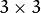

Motion Analysis and Object Tracking¶
calcOpticalFlowPyrLK¶
Calculates an optical flow for a sparse feature set using the iterative Lucas-Kanade method with pyramids.
- C++: void calcOpticalFlowPyrLK(InputArray prevImg, InputArray nextImg, InputArray prevPts, InputOutputArray nextPts, OutputArray status, OutputArray err, Size winSize=Size(21,21), int maxLevel=3, TermCriteria criteria=TermCriteria(TermCriteria::COUNT+TermCriteria::EPS, 30, 0.01), int flags=0, double minEigThreshold=1e-4 )¶
- Python: cv2.calcOpticalFlowPyrLK(prevImg, nextImg, prevPts[, nextPts[, status[, err[, winSize[, maxLevel[, criteria[, flags[, minEigThreshold]]]]]]]]) → nextPts, status, err¶
- C: void cvCalcOpticalFlowPyrLK(const CvArr* prev, const CvArr* curr, CvArr* prev_pyr, CvArr* curr_pyr, const CvPoint2D32f* prev_features, CvPoint2D32f* curr_features, int count, CvSize win_size, int level, char* status, float* track_error, CvTermCriteria criteria, int flags)¶
- Python: cv.CalcOpticalFlowPyrLK(prev, curr, prevPyr, currPyr, prevFeatures, winSize, level, criteria, flags, guesses=None) -> (currFeatures, status, track_error)¶
Parameters: - prevImg – first 8-bit input image or pyramid constructed by buildOpticalFlowPyramid().
- nextImg – second input image or pyramid of the same size and the same type as prevImg.
- prevPts – vector of 2D points for which the flow needs to be found; point coordinates must be single-precision floating-point numbers.
- nextPts – output vector of 2D points (with single-precision floating-point coordinates) containing the calculated new positions of input features in the second image; when OPTFLOW_USE_INITIAL_FLOW flag is passed, the vector must have the same size as in the input.
- status – output status vector (of unsigned chars); each element of the vector is set to 1 if the flow for the corresponding features has been found, otherwise, it is set to 0.
- err – output vector of errors; each element of the vector is set to an error for the corresponding feature, type of the error measure can be set in flags parameter; if the flow wasn’t found then the error is not defined (use the status parameter to find such cases).
- winSize – size of the search window at each pyramid level.
- maxLevel – 0-based maximal pyramid level number; if set to 0, pyramids are not used (single level), if set to 1, two levels are used, and so on; if pyramids are passed to input then algorithm will use as many levels as pyramids have but no more than maxLevel.
- criteria – parameter, specifying the termination criteria of the iterative search algorithm (after the specified maximum number of iterations criteria.maxCount or when the search window moves by less than criteria.epsilon.
- flags –
operation flags:
- OPTFLOW_USE_INITIAL_FLOW uses initial estimations, stored in nextPts; if the flag is not set, then prevPts is copied to nextPts and is considered the initial estimate.
- OPTFLOW_LK_GET_MIN_EIGENVALS use minimum eigen values as an error measure (see minEigThreshold description); if the flag is not set, then L1 distance between patches around the original and a moved point, divided by number of pixels in a window, is used as a error measure.
- minEigThreshold – the algorithm calculates the minimum eigen value of a 2x2 normal matrix of optical flow equations (this matrix is called a spatial gradient matrix in [Bouguet00]), divided by number of pixels in a window; if this value is less than minEigThreshold, then a corresponding feature is filtered out and its flow is not processed, so it allows to remove bad points and get a performance boost.
The function implements a sparse iterative version of the Lucas-Kanade optical flow in pyramids. See [Bouguet00]. The function is parallelized with the TBB library.
Note
- An example using the Lucas-Kanade optical flow algorithm can be found at opencv_source_code/samples/cpp/lkdemo.cpp
- (Python) An example using the Lucas-Kanade optical flow algorithm can be found at opencv_source_code/samples/python2/lk_track.py
- (Python) An example using the Lucas-Kanade tracker for homography matching can be found at opencv_source_code/samples/python2/lk_homography.py
buildOpticalFlowPyramid¶
Constructs the image pyramid which can be passed to calcOpticalFlowPyrLK().
- C++: int buildOpticalFlowPyramid(InputArray img, OutputArrayOfArrays pyramid, Size winSize, int maxLevel, bool withDerivatives=true, int pyrBorder=BORDER_REFLECT_101, int derivBorder=BORDER_CONSTANT, bool tryReuseInputImage=true)¶
- Python: cv2.buildOpticalFlowPyramid(img, winSize, maxLevel[, pyramid[, withDerivatives[, pyrBorder[, derivBorder[, tryReuseInputImage]]]]]) → retval, pyramid¶
Parameters: - img – 8-bit input image.
- pyramid – output pyramid.
- winSize – window size of optical flow algorithm. Must be not less than winSize argument of calcOpticalFlowPyrLK(). It is needed to calculate required padding for pyramid levels.
- maxLevel – 0-based maximal pyramid level number.
- withDerivatives – set to precompute gradients for the every pyramid level. If pyramid is constructed without the gradients then calcOpticalFlowPyrLK() will calculate them internally.
- pyrBorder – the border mode for pyramid layers.
- derivBorder – the border mode for gradients.
- tryReuseInputImage – put ROI of input image into the pyramid if possible. You can pass false to force data copying.
Returns: number of levels in constructed pyramid. Can be less than maxLevel.
calcOpticalFlowFarneback¶
Computes a dense optical flow using the Gunnar Farneback’s algorithm.
- C++: void calcOpticalFlowFarneback(InputArray prev, InputArray next, InputOutputArray flow, double pyr_scale, int levels, int winsize, int iterations, int poly_n, double poly_sigma, int flags)¶
- C: void cvCalcOpticalFlowFarneback(const CvArr* prev, const CvArr* next, CvArr* flow, double pyr_scale, int levels, int winsize, int iterations, int poly_n, double poly_sigma, int flags)¶
- Python: cv2.calcOpticalFlowFarneback(prev, next, pyr_scale, levels, winsize, iterations, poly_n, poly_sigma, flags[, flow]) → flow¶
Parameters: - prev – first 8-bit single-channel input image.
- next – second input image of the same size and the same type as prev.
- flow – computed flow image that has the same size as prev and type CV_32FC2.
- pyr_scale – parameter, specifying the image scale (<1) to build pyramids for each image; pyr_scale=0.5 means a classical pyramid, where each next layer is twice smaller than the previous one.
- levels – number of pyramid layers including the initial image; levels=1 means that no extra layers are created and only the original images are used.
- winsize – averaging window size; larger values increase the algorithm robustness to image noise and give more chances for fast motion detection, but yield more blurred motion field.
- iterations – number of iterations the algorithm does at each pyramid level.
- poly_n – size of the pixel neighborhood used to find polynomial expansion in each pixel; larger values mean that the image will be approximated with smoother surfaces, yielding more robust algorithm and more blurred motion field, typically poly_n =5 or 7.
- poly_sigma – standard deviation of the Gaussian that is used to smooth derivatives used as a basis for the polynomial expansion; for poly_n=5, you can set poly_sigma=1.1, for poly_n=7, a good value would be poly_sigma=1.5.
- flags –
operation flags that can be a combination of the following:
- OPTFLOW_USE_INITIAL_FLOW uses the input flow as an initial flow approximation.
- OPTFLOW_FARNEBACK_GAUSSIAN uses the Gaussian filter instead of a box filter of the same size for optical flow estimation; usually, this option gives z more accurate flow than with a box filter, at the cost of lower speed; normally, winsize for a Gaussian window should be set to a larger value to achieve the same level of robustness.
The function finds an optical flow for each prev pixel using the [Farneback2003] algorithm so that
Note
- An example using the optical flow algorithm described by Gunnar Farneback can be found at opencv_source_code/samples/cpp/fback.cpp
- (Python) An example using the optical flow algorithm described by Gunnar Farneback can be found at opencv_source_code/samples/python2/opt_flow.py
estimateRigidTransform¶
Computes an optimal affine transformation between two 2D point sets.
- C++: Mat estimateRigidTransform(InputArray src, InputArray dst, bool fullAffine)¶
- Python: cv2.estimateRigidTransform(src, dst, fullAffine) → retval¶
Parameters: - src – First input 2D point set stored in std::vector or Mat, or an image stored in Mat.
- dst – Second input 2D point set of the same size and the same type as A, or another image.
- fullAffine – If true, the function finds an optimal affine transformation with no additional restrictions (6 degrees of freedom). Otherwise, the class of transformations to choose from is limited to combinations of translation, rotation, and uniform scaling (5 degrees of freedom).
The function finds an optimal affine transform [A|b] (a 2 x 3 floating-point matrix) that approximates best the affine transformation between:
- Two point sets
- Two raster images. In this case, the function first finds some features in the src image and finds the corresponding features in dst image. After that, the problem is reduced to the first case.
In case of point sets, the problem is formulated as follows: you need to find a 2x2 matrix A and 2x1 vector b so that:
where src[i] and dst[i] are the i-th points in src and dst, respectively
can be either arbitrary (when fullAffine=true ) or have a form of
when fullAffine=false .
updateMotionHistory¶
Updates the motion history image by a moving silhouette.
- C++: void updateMotionHistory(InputArray silhouette, InputOutputArray mhi, double timestamp, double duration)¶
- Python: cv2.updateMotionHistory(silhouette, mhi, timestamp, duration) → None¶
- C: void cvUpdateMotionHistory(const CvArr* silhouette, CvArr* mhi, double timestamp, double duration)¶
- Python: cv.UpdateMotionHistory(silhouette, mhi, timestamp, duration) → None¶
Parameters: - silhouette – Silhouette mask that has non-zero pixels where the motion occurs.
- mhi – Motion history image that is updated by the function (single-channel, 32-bit floating-point).
- timestamp – Current time in milliseconds or other units.
- duration – Maximal duration of the motion track in the same units as timestamp .
The function updates the motion history image as follows:
That is, MHI pixels where the motion occurs are set to the current timestamp , while the pixels where the motion happened last time a long time ago are cleared.
The function, together with calcMotionGradient() and calcGlobalOrientation() , implements a motion templates technique described in [Davis97] and [Bradski00]. See also the OpenCV sample motempl.c that demonstrates the use of all the motion template functions.
calcMotionGradient¶
Calculates a gradient orientation of a motion history image.
- C++: void calcMotionGradient(InputArray mhi, OutputArray mask, OutputArray orientation, double delta1, double delta2, int apertureSize=3 )¶
- Python: cv2.calcMotionGradient(mhi, delta1, delta2[, mask[, orientation[, apertureSize]]]) → mask, orientation¶
- C: void cvCalcMotionGradient(const CvArr* mhi, CvArr* mask, CvArr* orientation, double delta1, double delta2, int aperture_size=3 )¶
- Python: cv.CalcMotionGradient(mhi, mask, orientation, delta1, delta2, apertureSize=3) → None¶
Parameters: - mhi – Motion history single-channel floating-point image.
- mask – Output mask image that has the type CV_8UC1 and the same size as mhi . Its non-zero elements mark pixels where the motion gradient data is correct.
- orientation – Output motion gradient orientation image that has the same type and the same size as mhi . Each pixel of the image is a motion orientation, from 0 to 360 degrees.
- delta1 – Minimal (or maximal) allowed difference between mhi values within a pixel neighborhood.
- delta2 –
Maximal (or minimal) allowed difference between mhi values within a pixel neighborhood. That is, the function finds the minimum ( ) and maximum ( ) mhi values over  neighborhood of each pixel and marks the motion orientation at
 as valid only if
as valid only if - apertureSize – Aperture size of the Sobel() operator.
The function calculates a gradient orientation at each pixel
as:
In fact, fastAtan2() and phase() are used so that the computed angle is measured in degrees and covers the full range 0..360. Also, the mask is filled to indicate pixels where the computed angle is valid.
Note
- (Python) An example on how to perform a motion template technique can be found at opencv_source_code/samples/python2/motempl.py
calcGlobalOrientation¶
Calculates a global motion orientation in a selected region.
- C++: double calcGlobalOrientation(InputArray orientation, InputArray mask, InputArray mhi, double timestamp, double duration)¶
- Python: cv2.calcGlobalOrientation(orientation, mask, mhi, timestamp, duration) → retval¶
- C: double cvCalcGlobalOrientation(const CvArr* orientation, const CvArr* mask, const CvArr* mhi, double timestamp, double duration)¶
- Python: cv.CalcGlobalOrientation(orientation, mask, mhi, timestamp, duration) → float¶
Parameters: - orientation – Motion gradient orientation image calculated by the function calcMotionGradient() .
- mask – Mask image. It may be a conjunction of a valid gradient mask, also calculated by calcMotionGradient() , and the mask of a region whose direction needs to be calculated.
- mhi – Motion history image calculated by updateMotionHistory() .
- timestamp – Timestamp passed to updateMotionHistory() .
- duration – Maximum duration of a motion track in milliseconds, passed to updateMotionHistory() .
The function calculates an average motion direction in the selected region and returns the angle between 0 degrees and 360 degrees. The average direction is computed from the weighted orientation histogram, where a recent motion has a larger weight and the motion occurred in the past has a smaller weight, as recorded in mhi .
segmentMotion¶
Splits a motion history image into a few parts corresponding to separate independent motions (for example, left hand, right hand).
- C++: void segmentMotion(InputArray mhi, OutputArray segmask, vector<Rect>& boundingRects, double timestamp, double segThresh)¶
- Python: cv2.segmentMotion(mhi, timestamp, segThresh[, segmask]) → segmask, boundingRects¶
- C: CvSeq* cvSegmentMotion(const CvArr* mhi, CvArr* seg_mask, CvMemStorage* storage, double timestamp, double seg_thresh)¶
- Python: cv.SegmentMotion(mhi, seg_mask, storage, timestamp, seg_thresh) → boundingRects¶
Parameters: - mhi – Motion history image.
- segmask – Image where the found mask should be stored, single-channel, 32-bit floating-point.
- boundingRects – Vector containing ROIs of motion connected components.
- timestamp – Current time in milliseconds or other units.
- segThresh – Segmentation threshold that is recommended to be equal to the interval between motion history “steps” or greater.
The function finds all of the motion segments and marks them in segmask with individual values (1,2,...). It also computes a vector with ROIs of motion connected components. After that the motion direction for every component can be calculated with calcGlobalOrientation() using the extracted mask of the particular component.
CamShift¶
Finds an object center, size, and orientation.
- C++: RotatedRect CamShift(InputArray probImage, Rect& window, TermCriteria criteria)¶
- Python: cv2.CamShift(probImage, window, criteria) → retval, window¶
- C: int cvCamShift(const CvArr* prob_image, CvRect window, CvTermCriteria criteria, CvConnectedComp* comp, CvBox2D* box=NULL )¶
- Python: cv.CamShift(prob_image, window, criteria) -> (int, comp, box)¶
Parameters: - probImage – Back projection of the object histogram. See calcBackProject() .
- window – Initial search window.
- criteria – Stop criteria for the underlying meanShift() .
Returns: (in old interfaces) Number of iterations CAMSHIFT took to converge
The function implements the CAMSHIFT object tracking algorithm [Bradski98]. First, it finds an object center using meanShift() and then adjusts the window size and finds the optimal rotation. The function returns the rotated rectangle structure that includes the object position, size, and orientation. The next position of the search window can be obtained with RotatedRect::boundingRect() .
See the OpenCV sample camshiftdemo.c that tracks colored objects.
Note
- (Python) A sample explaining the camshift tracking algorithm can be found at opencv_source_code/samples/python2/camshift.py
meanShift¶
Finds an object on a back projection image.
- C++: int meanShift(InputArray probImage, Rect& window, TermCriteria criteria)¶
- Python: cv2.meanShift(probImage, window, criteria) → retval, window¶
- C: int cvMeanShift(const CvArr* prob_image, CvRect window, CvTermCriteria criteria, CvConnectedComp* comp)¶
- Python: cv.MeanShift(prob_image, window, criteria) → comp¶
Parameters: - probImage – Back projection of the object histogram. See calcBackProject() for details.
- window – Initial search window.
- criteria – Stop criteria for the iterative search algorithm.
Returns: Number of iterations CAMSHIFT took to converge.
The function implements the iterative object search algorithm. It takes the input back projection of an object and the initial position. The mass center in window of the back projection image is computed and the search window center shifts to the mass center. The procedure is repeated until the specified number of iterations criteria.maxCount is done or until the window center shifts by less than criteria.epsilon . The algorithm is used inside CamShift() and, unlike CamShift() , the search window size or orientation do not change during the search. You can simply pass the output of calcBackProject() to this function. But better results can be obtained if you pre-filter the back projection and remove the noise. For example, you can do this by retrieving connected components with findContours() , throwing away contours with small area ( contourArea() ), and rendering the remaining contours with drawContours() .
Note
- A mean-shift tracking sample can be found at opencv_source_code/samples/cpp/camshiftdemo.cpp
KalmanFilter¶
- class KalmanFilter¶
Kalman filter class.
The class implements a standard Kalman filter http://en.wikipedia.org/wiki/Kalman_filter, [Welch95]. However, you can modify transitionMatrix, controlMatrix, and measurementMatrix to get an extended Kalman filter functionality. See the OpenCV sample kalman.cpp .
Note
- An example using the standard Kalman filter can be found at opencv_source_code/samples/cpp/kalman.cpp
KalmanFilter::KalmanFilter¶
The constructors.
- C++: KalmanFilter::KalmanFilter()¶
- C++: KalmanFilter::KalmanFilter(int dynamParams, int measureParams, int controlParams=0, int type=CV_32F)¶
- Python: cv2.KalmanFilter([dynamParams, measureParams[, controlParams[, type]]]) → <KalmanFilter object>¶
- C: CvKalman* cvCreateKalman(int dynam_params, int measure_params, int control_params=0 )¶
- Python: cv.CreateKalman(dynam_params, measure_params, control_params=0) → CvKalman¶
The full constructor.
Parameters: - dynamParams – Dimensionality of the state.
- measureParams – Dimensionality of the measurement.
- controlParams – Dimensionality of the control vector.
- type – Type of the created matrices that should be CV_32F or CV_64F.
Note
In C API when CvKalman* kalmanFilter structure is not needed anymore, it should be released with cvReleaseKalman(&kalmanFilter)
KalmanFilter::init¶
Re-initializes Kalman filter. The previous content is destroyed.
- C++: void KalmanFilter::init(int dynamParams, int measureParams, int controlParams=0, int type=CV_32F)¶
Parameters: - dynamParams – Dimensionalityensionality of the state.
- measureParams – Dimensionality of the measurement.
- controlParams – Dimensionality of the control vector.
- type – Type of the created matrices that should be CV_32F or CV_64F.
KalmanFilter::predict¶
Computes a predicted state.
- C++: const Mat& KalmanFilter::predict(const Mat& control=Mat())¶
- Python: cv2.KalmanFilter.predict([control]) → retval¶
- C: const CvMat* cvKalmanPredict(CvKalman* kalman, const CvMat* control=NULL)¶
- Python: cv.KalmanPredict(kalman, control=None) → mat¶
Parameters: control – The optional input control
KalmanFilter::correct¶
Updates the predicted state from the measurement.
- C++: const Mat& KalmanFilter::correct(const Mat& measurement)¶
- Python: cv2.KalmanFilter.correct(measurement) → retval¶
- C: const CvMat* cvKalmanCorrect(CvKalman* kalman, const CvMat* measurement)¶
- Python: cv.KalmanCorrect(kalman, measurement) → mat¶
Parameters: measurement – The measured system parameters
BackgroundSubtractor¶
- class BackgroundSubtractor : public Algorithm¶
Base class for background/foreground segmentation.
class BackgroundSubtractor : public Algorithm
{
public:
virtual ~BackgroundSubtractor();
virtual void operator()(InputArray image, OutputArray fgmask, double learningRate=0);
virtual void getBackgroundImage(OutputArray backgroundImage) const;
};
The class is only used to define the common interface for the whole family of background/foreground segmentation algorithms.
BackgroundSubtractor::operator()¶
Computes a foreground mask.
- C++: void BackgroundSubtractor::operator()(InputArray image, OutputArray fgmask, double learningRate=0)¶
- Python: cv2.BackgroundSubtractor.apply(image[, fgmask[, learningRate]]) → fgmask¶
Parameters: - image – Next video frame.
- fgmask – The output foreground mask as an 8-bit binary image.
BackgroundSubtractor::getBackgroundImage¶
Computes a background image.
- C++: void BackgroundSubtractor::getBackgroundImage(OutputArray backgroundImage) const¶
Parameters: - backgroundImage – The output background image.
Note
Sometimes the background image can be very blurry, as it contain the average background statistics.
BackgroundSubtractorMOG¶
- class BackgroundSubtractorMOG : public BackgroundSubtractor¶
Gaussian Mixture-based Background/Foreground Segmentation Algorithm.
The class implements the algorithm described in P. KadewTraKuPong and R. Bowden, An improved adaptive background mixture model for real-time tracking with shadow detection, Proc. 2nd European Workshop on Advanced Video-Based Surveillance Systems, 2001: http://personal.ee.surrey.ac.uk/Personal/R.Bowden/publications/avbs01/avbs01.pdf
BackgroundSubtractorMOG::BackgroundSubtractorMOG¶
The constructors.
- C++: BackgroundSubtractorMOG::BackgroundSubtractorMOG()¶
- C++: BackgroundSubtractorMOG::BackgroundSubtractorMOG(int history, int nmixtures, double backgroundRatio, double noiseSigma=0)¶
- Python: cv2.BackgroundSubtractorMOG([history, nmixtures, backgroundRatio[, noiseSigma]]) → <BackgroundSubtractorMOG object>¶
Parameters: - history – Length of the history.
- nmixtures – Number of Gaussian mixtures.
- backgroundRatio – Background ratio.
- noiseSigma – Noise strength.
Default constructor sets all parameters to default values.
BackgroundSubtractorMOG::operator()¶
Updates the background model and returns the foreground mask
- C++: void BackgroundSubtractorMOG::operator()(InputArray image, OutputArray fgmask, double learningRate=0)¶
Parameters are the same as in BackgroundSubtractor::operator()
BackgroundSubtractorMOG2¶
Gaussian Mixture-based Background/Foreground Segmentation Algorithm.
- class BackgroundSubtractorMOG2 : public BackgroundSubtractor¶
Here are important members of the class that control the algorithm, which you can set after constructing the class instance:
- int nmixtures¶
Maximum allowed number of mixture components. Actual number is determined dynamically per pixel.
- float backgroundRatio¶
Threshold defining whether the component is significant enough to be included into the background model ( corresponds to TB=1-cf from the paper??which paper??). cf=0.1 => TB=0.9 is default. For alpha=0.001, it means that the mode should exist for approximately 105 frames before it is considered foreground.
- float varThresholdGen¶
Threshold for the squared Mahalanobis distance that helps decide when a sample is close to the existing components (corresponds to Tg). If it is not close to any component, a new component is generated. 3 sigma => Tg=3*3=9 is default. A smaller Tg value generates more components. A higher Tg value may result in a small number of components but they can grow too large.
- float fVarInit¶
Initial variance for the newly generated components. It affects the speed of adaptation. The parameter value is based on your estimate of the typical standard deviation from the images. OpenCV uses 15 as a reasonable value.
- float fVarMin¶
Parameter used to further control the variance.
- float fVarMax¶
Parameter used to further control the variance.
- float fCT¶
Complexity reduction parameter. This parameter defines the number of samples needed to accept to prove the component exists. CT=0.05 is a default value for all the samples. By setting CT=0 you get an algorithm very similar to the standard Stauffer&Grimson algorithm.
- uchar nShadowDetection¶
The value for marking shadow pixels in the output foreground mask. Default value is 127.
- float fTau¶
Shadow threshold. The shadow is detected if the pixel is a darker version of the background. Tau is a threshold defining how much darker the shadow can be. Tau= 0.5 means that if a pixel is more than twice darker then it is not shadow. See Prati,Mikic,Trivedi,Cucchiarra, Detecting Moving Shadows..., IEEE PAMI,2003.
The class implements the Gaussian mixture model background subtraction described in:
- Z.Zivkovic, Improved adaptive Gausian mixture model for background subtraction, International Conference Pattern Recognition, UK, August, 2004, http://www.zoranz.net/Publications/zivkovic2004ICPR.pdf. The code is very fast and performs also shadow detection. Number of Gausssian components is adapted per pixel.
- Z.Zivkovic, F. van der Heijden, Efficient Adaptive Density Estimapion per Image Pixel for the Task of Background Subtraction, Pattern Recognition Letters, vol. 27, no. 7, pages 773-780, 2006. The algorithm similar to the standard Stauffer&Grimson algorithm with additional selection of the number of the Gaussian components based on: Z.Zivkovic, F.van der Heijden, Recursive unsupervised learning of finite mixture models, IEEE Trans. on Pattern Analysis and Machine Intelligence, vol.26, no.5, pages 651-656, 2004.
BackgroundSubtractorMOG2::BackgroundSubtractorMOG2¶
The constructors.
- C++: BackgroundSubtractorMOG2::BackgroundSubtractorMOG2()¶
- C++: BackgroundSubtractorMOG2::BackgroundSubtractorMOG2(int history, float varThreshold, bool bShadowDetection=true )¶
Parameters: - history – Length of the history.
- varThreshold – Threshold on the squared Mahalanobis distance to decide whether it is well described by the background model (see Cthr??). This parameter does not affect the background update. A typical value could be 4 sigma, that is, varThreshold=4*4=16; (see Tb??).
- bShadowDetection – Parameter defining whether shadow detection should be enabled (true or false).
BackgroundSubtractorMOG2::operator()¶
Updates the background model and computes the foreground mask
- C++: void BackgroundSubtractorMOG2::operator()(InputArray image, OutputArray fgmask, double learningRate=-1)¶
BackgroundSubtractorMOG2::getBackgroundImage¶
Returns background image
- C++: void BackgroundSubtractorMOG2::getBackgroundImage(OutputArray backgroundImage)¶
calcOpticalFlowSF¶
Calculate an optical flow using “SimpleFlow” algorithm.
- C++: void calcOpticalFlowSF(Mat& from, Mat& to, Mat& flow, int layers, int averaging_block_size, int max_flow)¶
- C++: void calcOpticalFlowSF(Mat& from, Mat& to, Mat& flow, int layers, int averaging_block_size, int max_flow, double sigma_dist, double sigma_color, int postprocess_window, double sigma_dist_fix, double sigma_color_fix, double occ_thr, int upscale_averaging_radius, double upscale_sigma_dist, double upscale_sigma_color, double speed_up_thr)¶
Parameters: - prev – First 8-bit 3-channel image.
- next – Second 8-bit 3-channel image
- flowX – X-coordinate of estimated flow
- flowY – Y-coordinate of estimated flow
- layers – Number of layers
- averaging_block_size – Size of block through which we sum up when calculate cost function for pixel
- max_flow – maximal flow that we search at each level
- sigma_dist – vector smooth spatial sigma parameter
- sigma_color – vector smooth color sigma parameter
- postprocess_window – window size for postprocess cross bilateral filter
- sigma_dist_fix – spatial sigma for postprocess cross bilateralf filter
- sigma_color_fix – color sigma for postprocess cross bilateral filter
- occ_thr – threshold for detecting occlusions
- upscale_averaging_radiud – window size for bilateral upscale operation
- upscale_sigma_dist – spatial sigma for bilateral upscale operation
- upscale_sigma_color – color sigma for bilateral upscale operation
- speed_up_thr – threshold to detect point with irregular flow - where flow should be recalculated after upscale
See [Tao2012]. And site of project - http://graphics.berkeley.edu/papers/Tao-SAN-2012-05/.
Note
- An example using the simpleFlow algorithm can be found at opencv_source_code/samples/cpp/simpleflow_demo.cpp
createOptFlow_DualTVL1¶
“Dual TV L1” Optical Flow Algorithm.
- C++: Ptr<DenseOpticalFlow> createOptFlow_DualTVL1()¶
The class implements the “Dual TV L1” optical flow algorithm described in [Zach2007] and [Javier2012] .
Here are important members of the class that control the algorithm, which you can set after constructing the class instance:
- double tau¶
Time step of the numerical scheme.
- double lambda¶
Weight parameter for the data term, attachment parameter. This is the most relevant parameter, which determines the smoothness of the output. The smaller this parameter is, the smoother the solutions we obtain. It depends on the range of motions of the images, so its value should be adapted to each image sequence.
- double theta¶
Weight parameter for (u - v)^2, tightness parameter. It serves as a link between the attachment and the regularization terms. In theory, it should have a small value in order to maintain both parts in correspondence. The method is stable for a large range of values of this parameter.
- int nscales¶
Number of scales used to create the pyramid of images.
- int warps¶
Number of warpings per scale. Represents the number of times that I1(x+u0) and grad( I1(x+u0) ) are computed per scale. This is a parameter that assures the stability of the method. It also affects the running time, so it is a compromise between speed and accuracy.
- double epsilon¶
Stopping criterion threshold used in the numerical scheme, which is a trade-off between precision and running time. A small value will yield more accurate solutions at the expense of a slower convergence.
- int iterations¶
Stopping criterion iterations number used in the numerical scheme.
DenseOpticalFlow::calc¶
Calculates an optical flow.
- C++: void DenseOpticalFlow::calc(InputArray I0, InputArray I1, InputOutputArray flow)¶
Parameters: - prev – first 8-bit single-channel input image.
- next – second input image of the same size and the same type as prev .
- flow – computed flow image that has the same size as prev and type CV_32FC2 .
DenseOpticalFlow::collectGarbage¶
Releases all inner buffers.
- C++: void DenseOpticalFlow::collectGarbage()¶
| [Bouguet00] | (1, 2) Jean-Yves Bouguet. Pyramidal Implementation of the Lucas Kanade Feature Tracker. |
| [Bradski98] | Bradski, G.R. “Computer Vision Face Tracking for Use in a Perceptual User Interface”, Intel, 1998 |
| [Bradski00] | Davis, J.W. and Bradski, G.R. “Motion Segmentation and Pose Recognition with Motion History Gradients”, WACV00, 2000 |
| [Davis97] | Davis, J.W. and Bobick, A.F. “The Representation and Recognition of Action Using Temporal Templates”, CVPR97, 1997 |
| [Farneback2003] | Gunnar Farneback, Two-frame motion estimation based on polynomial expansion, Lecture Notes in Computer Science, 2003, (2749), , 363-370. |
| [Horn81] | Berthold K.P. Horn and Brian G. Schunck. Determining Optical Flow. Artificial Intelligence, 17, pp. 185-203, 1981. |
| [Lucas81] | Lucas, B., and Kanade, T. An Iterative Image Registration Technique with an Application to Stereo Vision, Proc. of 7th International Joint Conference on Artificial Intelligence (IJCAI), pp. 674-679. |
| [Welch95] | Greg Welch and Gary Bishop “An Introduction to the Kalman Filter”, 1995 |
| [Tao2012] | Michael Tao, Jiamin Bai, Pushmeet Kohli and Sylvain Paris. SimpleFlow: A Non-iterative, Sublinear Optical Flow Algorithm. Computer Graphics Forum (Eurographics 2012) |
| [Zach2007] |
|
| [Javier2012] | Javier Sanchez, Enric Meinhardt-Llopis and Gabriele Facciolo. “TV-L1 Optical Flow Estimation”. |
Help and Feedback
You did not find what you were looking for?- Ask a question on the Q&A forum.
- If you think something is missing or wrong in the documentation, please file a bug report.

Table Of Contents
- Motion Analysis and Object Tracking
- calcOpticalFlowPyrLK
- buildOpticalFlowPyramid
- calcOpticalFlowFarneback
- estimateRigidTransform
- updateMotionHistory
- calcMotionGradient
- calcGlobalOrientation
- segmentMotion
- CamShift
- meanShift
- KalmanFilter
- KalmanFilter::KalmanFilter
- KalmanFilter::init
- KalmanFilter::predict
- KalmanFilter::correct
- BackgroundSubtractor
- BackgroundSubtractor::operator()
- BackgroundSubtractor::getBackgroundImage
- BackgroundSubtractorMOG
- BackgroundSubtractorMOG::BackgroundSubtractorMOG
- BackgroundSubtractorMOG::operator()
- BackgroundSubtractorMOG2
- BackgroundSubtractorMOG2::BackgroundSubtractorMOG2
- BackgroundSubtractorMOG2::operator()
- BackgroundSubtractorMOG2::getBackgroundImage
- calcOpticalFlowSF
- createOptFlow_DualTVL1
- DenseOpticalFlow::calc
- DenseOpticalFlow::collectGarbage
Previous topic
Next topic
calib3d. Camera Calibration and 3D Reconstruction